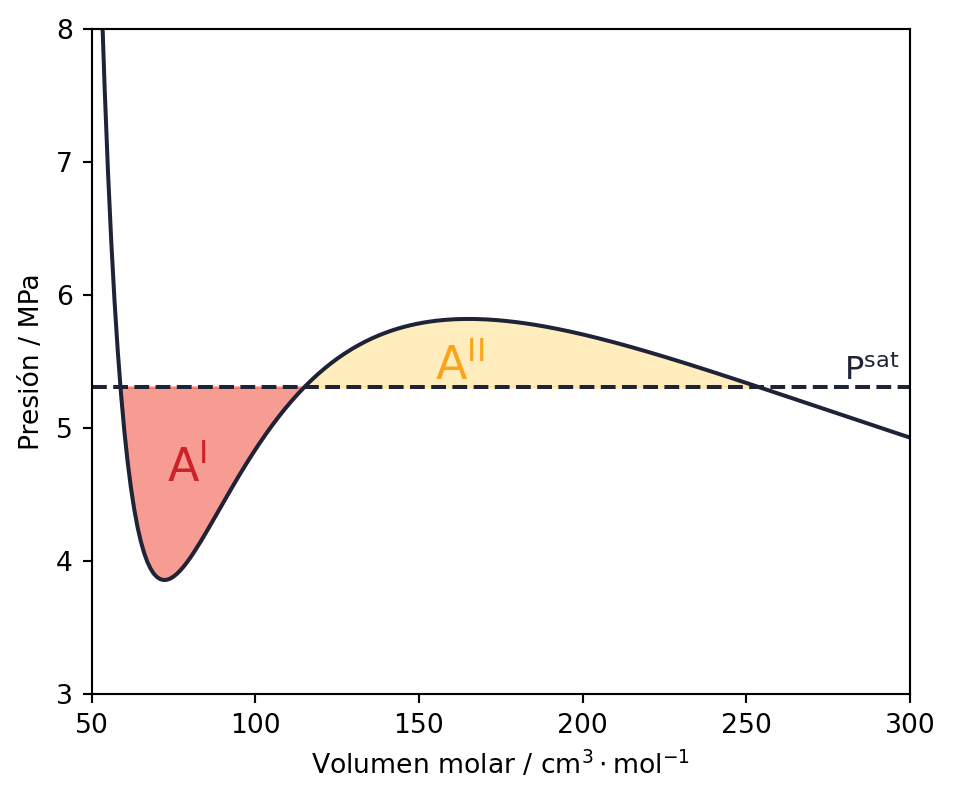

Fugacidad
Es fácil reconocer el proceso de cambio de fase de manera gráfica, donde la temperatura (\(T\)) y la presión (\(P\)), permanecen constantes bajo la curva de saturación. Esto es análogo a decir que, en condiciones de operación bajo la temperatura y presión crítica, existe cambio de fase en las condiciones de saturación.
La figura 1 muestra el cambio de fase en un gráfico PV (Temperatura constante) de metano:
Como se puede observar, en el lado izquierdo de la curva de saturación tenemos una línea casi horizontal, indicando la propiedad de volumen incompresible (\(d\underline{V}/dP\approx0\)) de la fase líquida. Y, al lado derecho, nos encontramos con la fase vapor.
Si tomamos los puntos donde la isoterma intercepta la curva de saturación, obtendremos dos volúmenes \(\underline{V}^L\) para la fase líquida y \(\underline{V}^V\) para la fase vapor. Continuando con esta notación, queda claro que \(T^L=T^V\) y \(P^L=P^V\).
No obstante, en equilibrio existe una propiedad más interesante: la energía libre de Gibbs. Si recordamos las ecuaciones fundamentales, las variables naturales de \(\underline{G}\) son la presión y la temperatura. Entonces, en equilibrio \(d\underline{G}=0\) o \(\underline{G}^L=\underline{G}^V\).
Notar que:
\(\underline{V}^L\ll \underline{V}^V\) para presiones y temperaturas alejadas del punto crítico.
La energía libre de Gibbs es la condición de equilibrio más imporante para cambios de fase, y como se explica en la sección 8.2.2 de Fundamentals of Chemical Engineering Thermodynamics, \(dG=0\) es un mínimo.
Presión de saturación a partir de una EoS
Recordemos nuestro gráfico PV para CO\(_2\). Bajo la temperatura crítica (\(T_c\)), las ecuaciones de estado se comportaban de manera contraintuitiva. En vez de seguir una línea recta, como lo esperaríamos en cambio de fase, se formaba una curva con vueltas correspondientes a una ecuación cuadrática. Esto último, es entendible dada la naturaleza de las ecuaciones de estado que estudiamos en el curso, sin embargo, no nos entrega una explicación sobre el cambio de fase.

Sabemos que en un cambio de fase líquido-vapor debe existir una representación de volumen para ambas fases, líquida (\(V^L\)) y gaseosa (\(V^V\)), a temperatura y presión constante. En otras palabras, queremos una línea de presión que intercepte como mínimo dos veces la EoS. Notarás que hay más de un valor de presión para el cual esta restricción es verdadera. Por suerte, las ecuaciones de estado cúbicas ocultan en su diseño una solución a esto. En equilibrio de fases y temperatura constante, la presión de saturación interceptará dicha EoS 3 veces formando dos áreas equivalentes.
La figura 2 ejemplifica las áreas formadas en equilibrio de fases para CO\(_2\) (sistema puro) a \(290~\mathrm{K}\). Diremos que los volúmenes extremos representarán la fase líquida y gaseosa tal que \(V^L\ll V^V\), mientras que el volumen intermedio es inestable (\(V^u\)).
¿Es lo mismo igualar las áreas a igualar \(G\)?
Siempre que encontremos las áreas equivalentes en el gráfico, tendremos las propiedades en equilibrio de presión, temperatura y volumen. Pero, ¿es lo mismo que igualar la energía libre de Gibbs? La respuesta es que sí.
Cálculo a partir de las áreas
Utilizando la figura 2, el área \(\mathrm{A}^\mathrm{I}\) y será la resta entre el área formada por la línea recta de presión y el área formada por la curva de la EoS. Mientras que para \(\mathrm{A}^\mathrm{II}\), la resta estará invertida.
\[ \mathrm{A}^\mathrm{I}=\int_{\underline{V}^L}^{\underline{V}^u}P^{\mathrm{sat}}d\underline{V}-\int_{\underline{V}^L}^{\underline{V}^u}P(\underline{V},T)d\underline{V} \]
\[ \mathrm{A}^\mathrm{II}=\int_{\underline{V}^u}^{\underline{V}^V}P(\underline{V},T)d\underline{V}-\int_{\underline{V}^u}^{\underline{V}^V}P^{\mathrm{sat}}d\underline{V} \]
Ya que sabemos que son equivalentes \(\mathrm{A}^\mathrm{I}-\mathrm{A}^\mathrm{II}=0\). Entonces, restando ambos lados:
\[ 0 = P^{\mathrm{sat}}\int_{\underline{V}^L}^{\underline{V}^V}d\underline{V}-\int_{\underline{V}^L}^{\underline{V}^V}P(\underline{V},T)d\underline{V} \]
Lo que es lo mismo que decir,
\[ 0 = P^{\mathrm{sat}}\left(\underline{V}^V-\underline{V}^L\right)-\int_{\underline{V}^L}^{\underline{V}^V}P(\underline{V},T)d\underline{V} \]
Cálculo a partir de Gibbs
A partir de la tabla de ecuaciones fundamentales, podemos escribir el diferencial de \(G\) a temperatura constante \(dT=0\), ya que estamos analizando la isolínea de temperatura (\(P\) no es constante para la EoS).
\[ d\underline{G} = \underline{V}dP \]
Con regla de la cadena \(dP\underline{V}=\underline{V}dP+Pd\underline{V}\), reescribirmos la ecuación.
\[ d\underline{G} = dP\underline{V}-Pd\underline{V} \]
Ahora integramos entre el punto de líquido saturado y vapor saturado. Recordar que estos puntos se encuentran a la misma presión \(P^\mathrm{sat}\).
\[ \int_{G^L}^{G^V}d\underline{G} = \int_{P^\mathrm{sat}\underline{V}^L}^{P^\mathrm{sat}\underline{V}^V}dP\underline{V}-\int_{\underline{V}^L}^{\underline{V}^V}Pd\underline{V} \]
Por la condición de equilibrio \(G^V-G^L=0\). Por lo que finalmente, llegamos a la misma expresión de las áreas.
\[ 0 = P^{\mathrm{sat}}\left(\underline{V}^V-\underline{V}^L\right)-\int_{\underline{V}^L}^{\underline{V}^V}P(\underline{V},T)d\underline{V} \]
Fugacidad como una herramienta matemática
En el ejemplo anterior pudimos encontrar facilmente la condición de equilibrio del sistema: \(G^L = G^V\). No obstante, igualar las energías de Gibbs resulta sumamente complejo en sistemas multicomponentes. Recordando lo visto en las propiedades multicomponentes [link], las ecuaciones fundamentales dependerán también del potencial químico. El problema es el siguiente: Los potenciales químicos tienden a ser negativamente infinitos a medida que la presión se hace 0. Y los potenciales químicos en mezclas tienden a ser negativamente infinitos a medida que la concentración de dicho compuesto se hace 0.
Estas limitaciones son coincidentes con las condiciones ideales (baja presión y dilución infinita). Por lo que nuestra condición de equilibrio es inconveniente. Para arreglar este problema, se inventó la fugacidad. Para un compuesto puro \(i\), la fugacidad viene dada por:
\[ \underline{G_i} = \underline{G_i}^0+RT\ln\frac{f_i}{P} \tag{1}\]
Por este motivo, en el contexto del curso es preferible entender la fugacidad como una herramienta matemática. Entonces, podemos “arreglar” nuestra condición de equilibrio vapor-líquido:
\[ \underline{G}^L = \underline{G}^V \quad \Big/ \quad -\underline{G}^0 \]
\[ \underline{G}^L - \underline{G}^0 = \underline{G}^V - \underline{G}^0 \quad \Big/ \quad \cdot\frac{1}{RT} \]
\[ \frac{\underline{G}^L-\underline{G}^0}{RT} = \frac{\underline{G}^V-\underline{G}^0}{RT} \quad \Big/ \quad \exp\left(\right) \]
Desde la equación 1 podemos escribir la igualdad como:
\[ \frac{f^L}{P^{sat}} = \frac{f^V}{P^{sat}} \]
Lo que es normalmente escrito usando el coeficiente de fugacidad \(\varphi \equiv f/P\).
\[ \varphi^L = \varphi^V = \varphi^{sat} \]
Compuestos en mezclas
En el caso de mezclas, para un compuesto \(i\) la relación entre la energía libre de Gibbs parcial molar \((\bar{G}_i)\) con la fugacidad en mezclas \((\hat{f}_i)\) viene dada por,
\[ \bar{G}_i = \bar{G}^0_i + RT\ln\frac{\hat{f}_i}{y_iP} \]
Similarmente, el coeficiente de fugacidad será:
\[ \hat{\varphi}_i \equiv \frac{\hat{f}_i}{y_iP} \]
Coeficiente de fugacidad para las EoS
Si quisieramos conocer la fugacidad para compuestos puros o en mezcla a partir de ecuaciones de estado, podríamos escribir la ecuación 1 como:
\[ RT\ln\varphi_i = \underline{G_i}(T,P) - \underline{G_i}^0(T,P) \]
Ya que \(\phi_i\) se relaciona por definición con la energía de Gibbs residual isotérmica (similar a lo que hicimos al inicio de esta sección); podemos utilizar la ecuación fundamental para Gibbs con \(dT = 0\). De esta forma llegamos a la siguiente expresión:
\[ RT\ln\varphi_i = \int_0^P \left(\underline{V_i} - \frac{RT}{P}\right)dP \]
Similarmente para compuestos en mezclas:
\[ RT\ln\hat{\varphi}_i = \int^P_0\left(\bar{V}_i-\frac{RT}{P}\right) \]
Ya que las EoS suelen ser explícitas para la presión, podemos utilizar relaciones de Maxwell y prodiedades de las integrales y derivadas para dejar las ecuaciones expresadas en función de P. Expresamos finalmente una relación conveniente entre el coeficiente de fugacidad y las EoS.
\[ \mathrm{Para~compuestos~puros:}\quad RT\ln\varphi_i = -\int_\infty^V\left[\left(\frac{\partial P}{\partial n}\right)_{T,~V}-\frac{RT}{V}\right]dV - RT\ln Z \]
\[ \mathrm{Para~compuestos~en~mezclas:}\quad RT\ln\hat{\varphi}_i = -\int_\infty^V\left[\left(\frac{\partial P}{\partial n_i}\right)_{T,~V,~n_j}-\frac{RT}{V}\right]dV - RT\ln Z \]
Sobre la notación
Importante notar que en las últimas dos ecuaciones el volumen está expresado como propiedad extensiva \((\mathrm{m}^3)\).